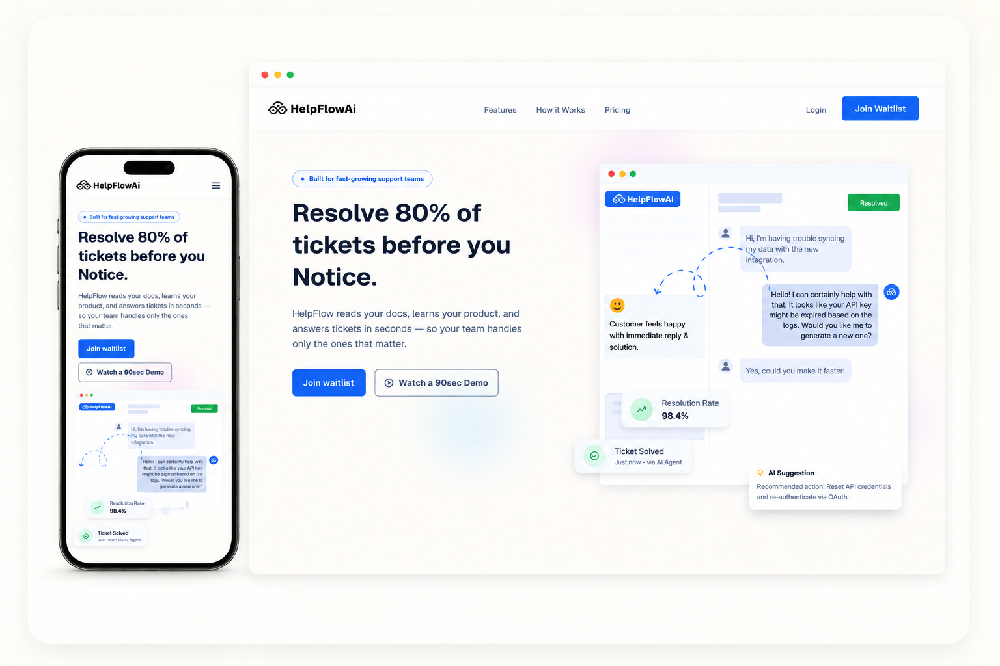
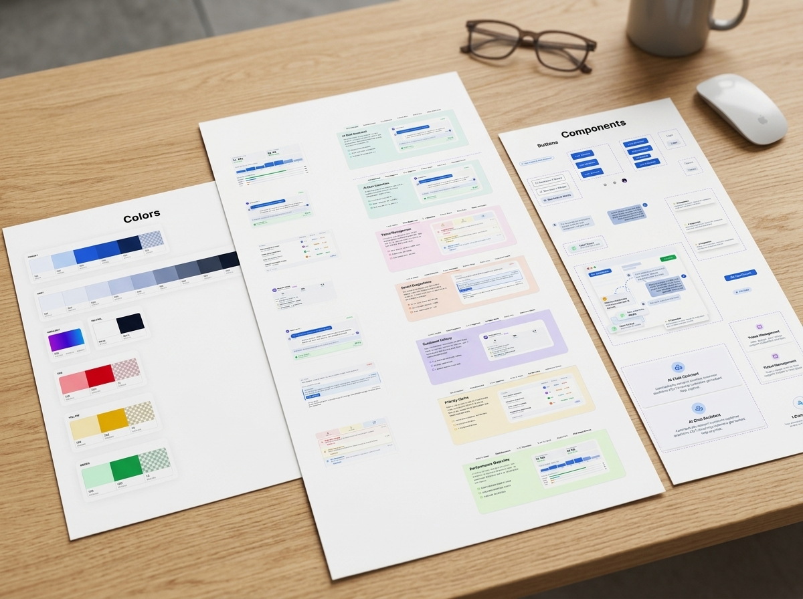
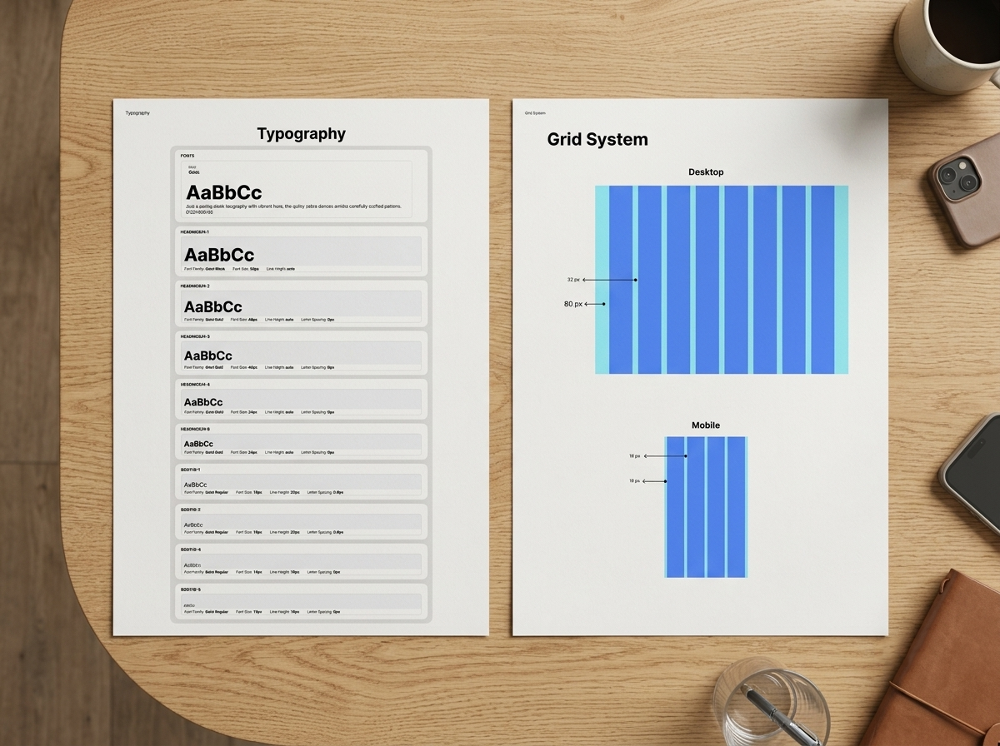

01 - SAAS · LANDING PAGE · DESIGN SYSTEM
HelpFlow AI
A landing page has one job: turn a skeptical visitor into a signed-up user before they scroll past the fold twice.

Not "design a landing page" - make a stranger trust an AI product enough to hand over their email, in 3 days.
Blue as the trust foundation, one gradient accent used in exactly 2 places - so warmth never competes with credibility.
- 8pt grid · 7 token categories · 10 type levels
- Tabbed feature module, ordered by real workflow
- Dev-ready states: hover, focus, disabled, loading
2 flagged gaps rebuilt into this version; 3 more logged openly instead of hidden - including a WCAG contrast check still owed.
Full write-up: brief, approach & system
The brief
HelpFlow AI needed to position itself as an AI-powered customer support platform - dense enough to prove technical credibility, simple enough for a founder evaluating five tools in one sitting to get it in seconds.
Approach
Warm didn't mean warm colours. Blue is the professional foundation - the same trust signal Intercom, Zendesk, and Freshdesk anchor on - with a single purple-to-blue gradient accent used in exactly two moments: the closing CTA and the hero's AI-thinking line. Geist carries the technical-credibility read at every size.
What shipped
- A conversion-first homepage with a clear single CTA hierarchy
- A componentized design system (buttons, cards, forms, nav) built for handoff, with dev-ready layer naming
- Responsive behaviour specified down to mobile breakpoints
Outcome
Delivered as a live, browsable prototype rather than static frames - so reviewers could evaluate real interaction and flow, not just the visual layer.


